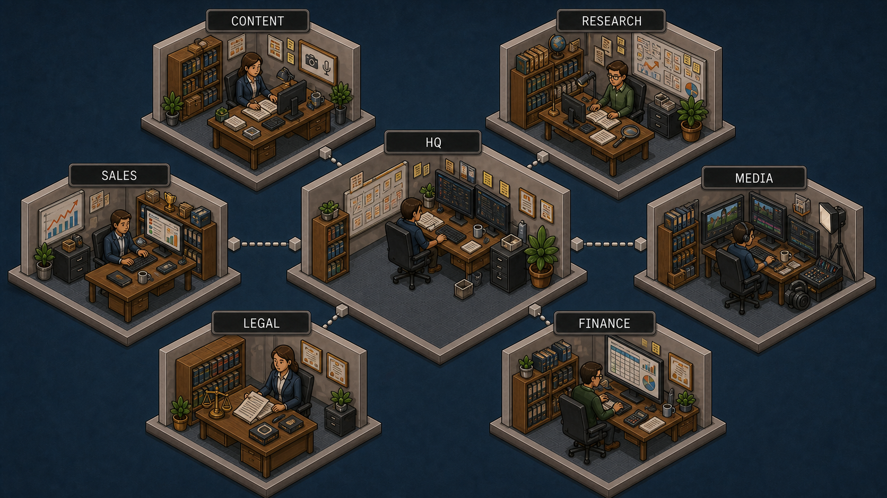
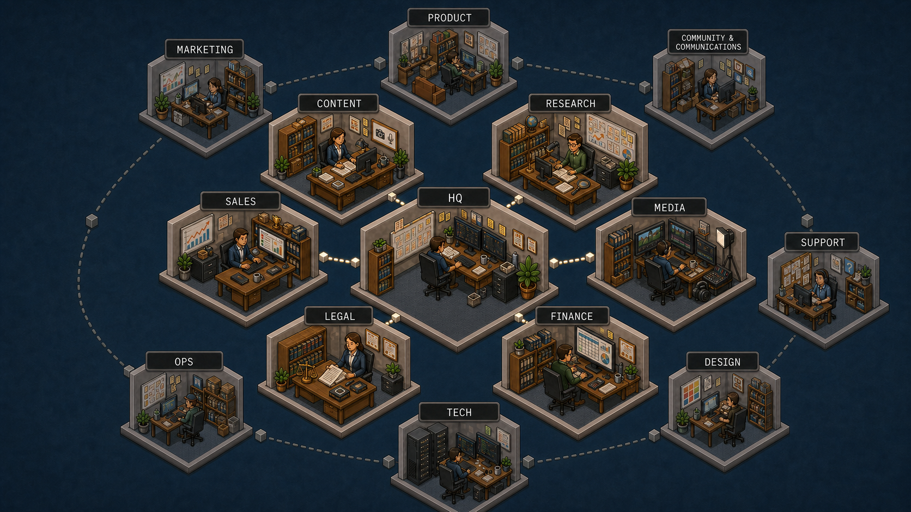

основная
HQ SimCity — первый слой
Рабочая карта: HQ и шесть функций первой необходимости. Крупные сцены и короткие связи рассчитаны на быстрое чтение.
История визуальных экспериментов Personal Corp: от островов до HQ SimCity. Архив сохраняет изображения, промпты и причины решений, но не является источником истины об организации.
Каноническая архитектура живёт в repo://dapi/hq/governance/organization-architecture.md.

Рабочая карта: HQ и шесть функций первой необходимости. Крупные сцены и короткие связи рассчитаны на быстрое чтение.

Первый слой расположен рядом с HQ, потенциальные функции второго слоя — на приглушённой внешней орбите.
Островная метафора признана удачным экспериментом, но заменена HQ SimCity: при реальном размере публикации сцены оказывались слишком мелкими, а расстояние до центра ослабляло сюжет.
Все сохранённые оригиналы, Retina-производные и сборочные исходники. Одинаковые экспортные версии не повторяются отдельными карточками выше.